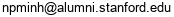

I received my Ph.D. from Stanford University under the supervision of Andrea Montanari. Before that, I received my bachelor degree from the National University of Singapore.
My research interests are in the theory of neural networks, statistical and algorithmic inference, information theory and coding theory.
[Google Scholar] [Github] Email: 
** Limiting fluctuation and trajectorial stability of multilayer neural networks with mean field training. [Paper]
H. T. Pham, P.-M. Nguyen. Neural Information Processing Systems (NeurIPS), 2021.
Analysis of Feature Learning in Weight-tied Autoencoders via the Mean Field Lens. [Paper]
P.-M. Nguyen. Preprint, Feb 2021.
* A Rigorous Framework for the Mean Field Limit of Multilayer Neural Networks. [Paper]
P.-M. Nguyen, H. T. Pham. Preprint, Jan 2020. (v2 May 2021)
H. T. Pham, P.-M. Nguyen. International Conference on Learning Representations (ICLR), 2021. Oral presentation (1.8% of submissions).
** A Note on the Global Convergence of Multilayer Neural Networks in the Mean Field Regime. [Paper]
H. T. Pham, P.-M. Nguyen. Preprint, Jun 2020.
Mean Field Limit in Neural Network Learning: Autoencoders and Multilayer Networks. [Stanford Repository]
P.-M. Nguyen. Ph.D. Thesis, 2020.
Mean Field Limit of the Learning Dynamics of Multilayer Neural Networks. [Paper]
P.-M. Nguyen. Preprint, Feb 2019.
* On Random Deep Weight-Tied Autoencoders: Exact Asymptotic Analysis, Phase Transitions and Implications to Training. [OpenReview]
P. Li, P.-M. Nguyen. International Conference on Learning Representations (ICLR), 2019. Oral presentation (1.5% of submissions).
* State Evolution for Approximate Message Passing with Non-Separable Functions. [Paper]
R. Berthier, A. Montanari, P.-M. Nguyen. Information and Inference: a Journal of the IMA, 2019.
* A Mean Field View of the Landscape of Two-Layers Neural Networks. [Paper]
S. Mei, A. Montanari, P.-M. Nguyen. Proceedings of the National Academy of Sciences, 2018.
* Universality of the Elastic Net Squared Error. [Long version]
A. Montanari, P.-M. Nguyen. IEEE International Symposium on Information Theory (ISIT), Aachen, Germany, 2017.
Universality of the LASSO Cost. [Note]
P.-M. Nguyen. Unpublished note, 2017.
Capacity of the Energy Harvesting Channel with a Finite Battery. [Paper]
D. Shaviv, P.-M. Nguyen, A. Ozgur. IEEE Transactions on Information Theory, 2016.
On Capacity Formulation with Stationary Inputs and Application to a Bit-Patterned Magnetic Recording Channel Model. [Paper]
P.-M. Nguyen, M.A. Armand. IEEE Transactions on Information Theory, 2015.
Improved Codes for Synchronization Error Correction on the BPMR Channel. [Extended abstract]
P.-M. Nguyen, M.A. Armand, T. Wu. The Magnetic Recording Conference (TMRC), Berkeley, USA, 2014.
On the Watermark String in the Davey-MacKay Construction.
P.-M. Nguyen, M.A. Armand, T. Wu. IEEE Communications Letters, 2013.
Journal refereeing:
Journal of the American Statistical Association, Entropy, Mathematical Programming, IEEE Trans. Information Theory, IEEE Trans. Signal Processing, IEEE Trans. Magnetics.
Conference refereeing:
ICML, ICLR, NeurIPS, MSML, AISTATS, ISIT. (Top reviewer for ICML 2019, ICML 2020, ICLR 2021, ICLR 2022.)